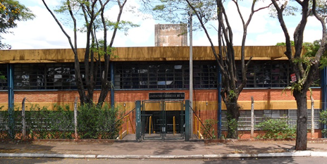

+14 3322-4908
E066acad@cps.sp.gov.br
Ourinhos SP, Brasil
A ETEC Jacinto Ferreira de Sá é reconhecida por sua dedicação à formação técnica e humana de seus estudantes. Localizada em uma região estratégica, a escola se tornou referência para jovens e adultos que buscam ensino público de qualidade. Seu ambiente acolhedor, organizado e comprometido com o conhecimento faz dela um polo educacional importante. Desde o momento em que o aluno entra pela porta, percebe o clima de responsabilidade e aprendizado. Os corredores amplos, os murais bem produzidos e a circulação constante de estudantes demonstram uma escola viva. A instituição tem como missão promover educação transformadora. Essa transformação não se limita apenas ao domínio de conteúdos técnicos, mas também ao desenvolvimento pessoal. Professores e funcionários trabalham juntos para assegurar um ambiente saudável e produtivo. A equipe gestora se esforça diariamente para alinhar práticas pedagógicas atualizadas. Esse alinhamento busca acompanhar as exigências do mercado de trabalho e das novas tecnologias. A ETEC Jacinto Ferreira de Sá entende que seu papel vai além de ensinar. Ela também inspira, motiva e orienta seus estudantes. O compromisso com a formação cidadã é visível em todas as ações da escola. Projetos internos incentivam a participação ativa dos alunos. Essas iniciativas permitem que cada estudante descubra suas habilidades individuais. Além disso, promovem a importância do trabalho em equipe. Ao longo do ano letivo, vários eventos fortalecem o vínculo entre comunidade e escola. Esses eventos incluem palestras, feiras, oficinas e exposições acadêmicas. Cada atividade busca ampliar o repertório cultural dos participantes. A instituição valoriza a diversidade de ideias. Por isso, incentiva o diálogo e o respeito entre todos. A sala de aula é vista como um espaço de construção coletiva. Professores estimulam a criatividade e o pensamento crítico. Esses professores são profissionais dedicados, que investem tempo no aperfeiçoamento constante. Eles participam de formações e cursos para manter suas práticas atualizadas. Essa atualização repercute diretamente na qualidade do ensino.A ETEC Jacinto Ferreira de Sá busca sempre atender às demandas contemporâneas. Para isso, adapta metodologias e incorpora novas ferramentas de aprendizagem.O uso de recursos digitais faz parte do cotidiano da escola. Embora a tecnologia seja valorizada, o contato humano permanece essencial. A instituição promove equilíbrio entre modernidade e sensibilidade pedagógica. O objetivo é formar profissionais completos e versáteis.

Fundação oficial da ETEC Jacinto Ferreira de Sá.